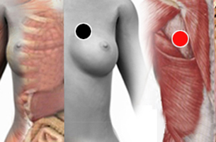

Estreptococo A
Pares
coronarias - pulmón
braquial - braquial
talón - talón

Generalidades:
Se manifiesta con problemas en piel: dermatitis, escarlatina. Si se combina con el estreptococo G nos da Psoriasis que se confunde con cáncer. También se puede manifestar en infección en la garganta con síntomas como tos, estornudo, irritación.
El hecho de que puedan aparecer los síntomas o incluso complicaciones se debe principalmente a la variedad de cepas y a la condición del sistema inmune de la persona.
Transmisión
La bacteria puede encontrarse en la piel, o incluso en la garganta sin causar síntomas, por lo que puede transmitirse inadvertidamente a otra persona.